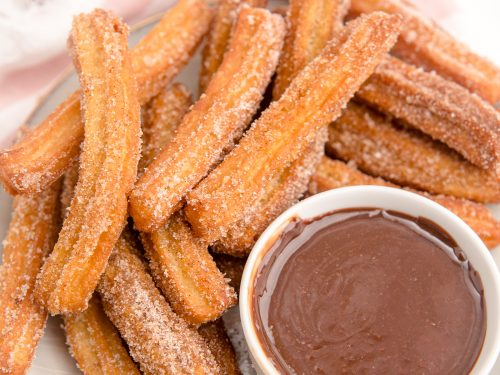

Churros

How to Make Churros
Churros (Mexican fritters) are very common at fairs. In my border hometown, the line at this stand is always overwhelming. People wait hours in line just to get a taste of these churros. I have run across several recipes but this is the best one by far.
- Combine water, 2 1/2 tablespoons sugar, salt, and 2 tablespoons vegetable oil in a small saucepan and place over medium heat. Bring to a boil and remove from the heat. Stir in flour, stirring until mixture forms a ball.
- Heat oil for frying in a deep fryer or deep pot to 375 degrees F (190 degrees C).
- Transfer the dough to a sturdy pastry bag fitted with a medium star tip. Carefully pipe a few 5- to 6-inch strips of dough into the hot oil; work in batches so you don't crowd the fryer. Cook until golden; use a spider or slotted spoon to transfer churros to paper towels to drain.
- Combine 1/2 cup sugar and cinnamon. Roll drained churros in cinnamon and sugar mixture.